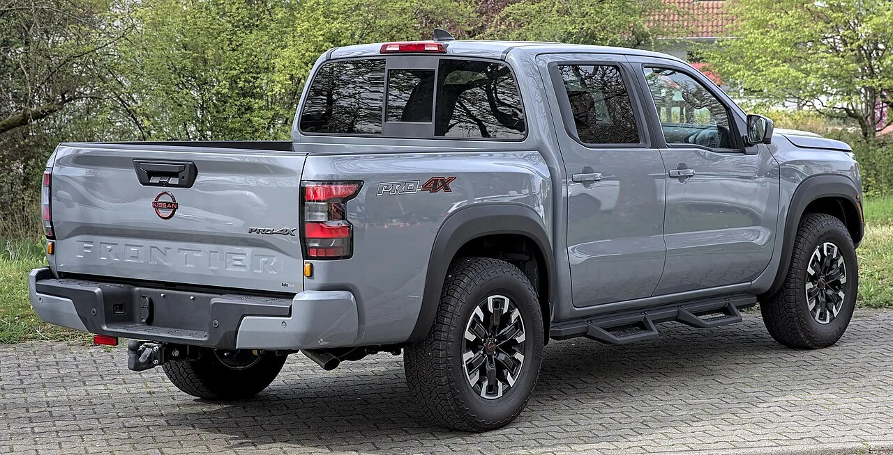
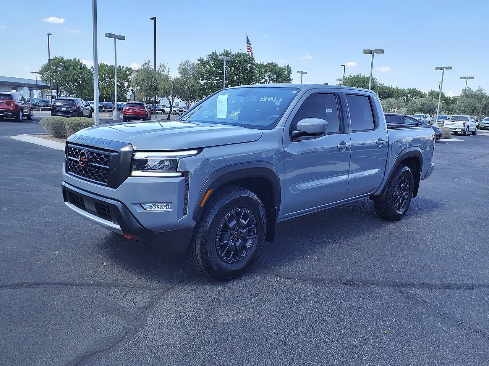

▲ 닛산 프론티어. 3.8리터 자연흡기 V6를 고수하며 "Too V6 to Quit"를 내걸었다
픽업트럭 시장의 흐름은 명확했습니다. 배기량을 줄이고 터보를 다는 것. GM은 콜로라도의 엔진을 2.7리터 터보 4기통으로 통일했고, 다른 브랜드도 비슷한 길을 갔습니다.
닛산은 따라가지 않았습니다. 프론티어에 3.8리터 자연흡기 V6를 그대로 두고, "Too V6 to Quit"라는 문구까지 내걸었습니다.
제원표만 보면 무모한 선택입니다. 최고출력은 두 차 모두 310마력으로 같은데, 토크가 202Nm 차이로 밀립니다. 그런데 2026년 상반기 판매 결과가 예상과 다르게 나왔습니다.
1. 제원표로는 지는 싸움
두 차의 숫자를 나란히 놓으면 차이가 분명합니다.
| 항목 | 프론티어 | 콜로라도 |
|---|---|---|
| 엔진 | 3.8L 자연흡기 V6 | 2.7L 터보 4기통 |
| 최고출력 | 310마력 | 310마력 |
| 최대토크 | 381Nm (281lb-ft) | 583Nm (430lb-ft) |
| 변속기 | 9단 자동 | 8단 자동 |
| 차체 구성 | 다양한 캡·박스 선택 | 크루캡 쇼트박스 단일 |
마력은 같습니다. 문제는 토크입니다. 583Nm 대 381Nm으로, 원 단위인 lb-ft로 보면 149lb-ft(약 202Nm) 차이가 납니다. 픽업트럭에서 토크는 견인과 적재 성능에 직결되는 항목이라, 카탈로그 비교에서 결정적으로 불리한 조건입니다.
이유는 엔진 방식에 있습니다. 터보는 배기가스로 압축 공기를 밀어 넣어 낮은 회전수부터 큰 토크를 만듭니다. 자연흡기는 흡입되는 공기량이 배기량에 묶여 있어, 회전수를 올려야 힘이 나옵니다.

▲ 프론티어는 캡과 적재함 조합을 다양하게 남겨뒀다
2. 그런데 판매는 반대로 갔다
2025년까지는 예상대로였습니다. 프론티어는 6만5,232대로 전년 대비 4.3% 줄었고, 콜로라도는 10만7,867대로 약 10% 늘었습니다. 격차는 4만 대가 넘었습니다.
2026년에 흐름이 뒤집혔습니다.
| 기간 | 프론티어 | 콜로라도 |
|---|---|---|
| 2025년 연간 | 6만5,232대 (-4.3%) | 10만7,867대 (+10%) |
| 2026년 2분기 | 2만1,690대 (+34.6%) | - |
| 2026년 상반기 | 4만3,101대 (+40.9%) | 4만7,693대 (-9.7%) |
프론티어는 상반기에 40.9% 늘었고, 콜로라도는 9.7% 줄었습니다. 4만 대가 넘던 격차가 4,592대까지 좁혀졌습니다.
다만 여기서 주의가 필요합니다. 이 반전이 순전히 엔진 때문이라고 단정할 수는 없습니다. 원 보도도 재고 상황, 금융 조건, 지역별 공급 같은 요인이 함께 작용했을 가능성을 언급하고 있습니다. 소비자가 "자연흡기라서 샀다"고 답한 조사 데이터가 있는 것은 아닙니다.
3. 그렇다면 무엇이 작용했나
닛산이 밝힌 선택의 이유는 세 가지입니다.
첫째, 차별화입니다. 경쟁사가 전부 터보 4기통으로 수렴하는 상황에서, 혼자 다른 길을 가면 그 자체가 선택지가 됩니다. 시장의 모든 차가 같아지면, 다른 하나에 수요가 몰립니다.
둘째, 차체 구성의 다양성입니다. 이 항목이 실제 판매에 더 크게 작용했을 수 있습니다. GM은 콜로라도를 크루캡 쇼트박스 단일 구성으로 정리했습니다. 생산 효율은 올라가지만, 다른 조합을 원하는 소비자는 갈 곳이 없어집니다. 프론티어는 여러 조합을 남겨뒀습니다.
셋째, 브랜드 정체성입니다. 닛산은 V6를 프론티어의 본질로 규정했습니다. "Too V6 to Quit"라는 문구는 성능 주장이 아니라 포지셔닝 선언에 가깝습니다.
자연흡기가 주는 실사용 감각도 무시하기 어렵습니다. 페달을 밟은 만큼 선형으로 반응하고, 터보 특유의 지연이 없으며, 구조가 단순해 장기 내구성에서 유리하다는 인식이 있습니다. 픽업트럭은 오래 타는 차종이라 이 항목의 무게가 승용차보다 큽니다.

▲ 픽업트럭은 오래 타는 차종이라 단순한 구조가 강점으로 작용한다
4. 자연흡기를 지킨 차들
프론티어만의 이야기가 아닙니다. 같은 선택을 한 차들이 최근 눈에 띕니다.
GMC 시에라는 6.2리터 자연흡기 V8에 426마력을 유지하며 9,420만 원에 국내 판매되고 있습니다. 1억 원 아래에서 살 수 있는 대배기량 자연흡기가 얼마 남지 않은 상황에서, 그 희소성 자체가 상품성이 됐습니다.
슈퍼카 쪽에서도 같은 흐름이 나타납니다. 고든 머레이 S1은 4.2리터 자연흡기 V12에 6단 수동을 조합했고, 맥라렌은 34년 만에 수동변속기를 되살린 콘셉트를 내놨습니다.
공통점은 "규제와 효율 때문에 사라지는 것"에 값이 매겨지고 있다는 점입니다. 다운사이징 터보가 표준이 될수록, 그 반대편의 가치가 올라갑니다.
다만 프론티어가 다른 사례들과 구별되는 지점이 있습니다. 슈퍼카가 아니라 대중 픽업이라는 것입니다. 희소성에 값을 치를 수 있는 고가 시장이 아니라, 가격과 실용을 따지는 시장에서 나온 결과입니다.
5. 정리 — 표준을 따르지 않는 비용과 이득
정리하면 닛산 프론티어는 토크에서 202Nm 밀리는 자연흡기 V6를 고수했고, 2026년 상반기 판매가 40.9% 늘어 경쟁 모델과의 격차를 4만 대에서 4,592대로 좁혔습니다.
이 사례가 말해주는 것은 제원표 우위가 판매 우위로 직결되지 않는다는 것입니다. 토크 202Nm 차이는 카탈로그에서는 결정적이지만, 실제 구매 결정에서는 차체 구성이나 엔진 특성, 브랜드 인식 같은 다른 항목과 함께 저울에 올라갑니다.
다만 반복해 짚어두면, 판매 반전의 원인이 엔진이라는 직접적 근거는 아직 없습니다. 재고와 금융 조건 등 다른 변수가 함께 작용했을 가능성이 남아 있습니다. 이 흐름이 이어질지는 하반기 실적으로 확인해야 합니다.